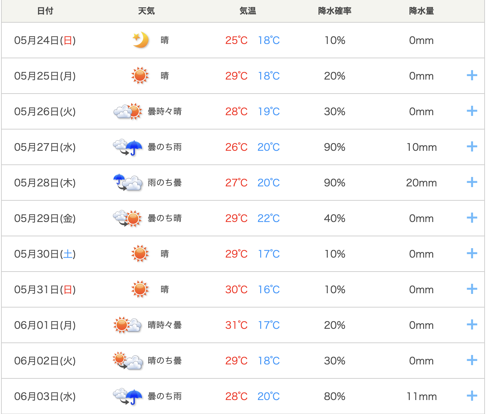
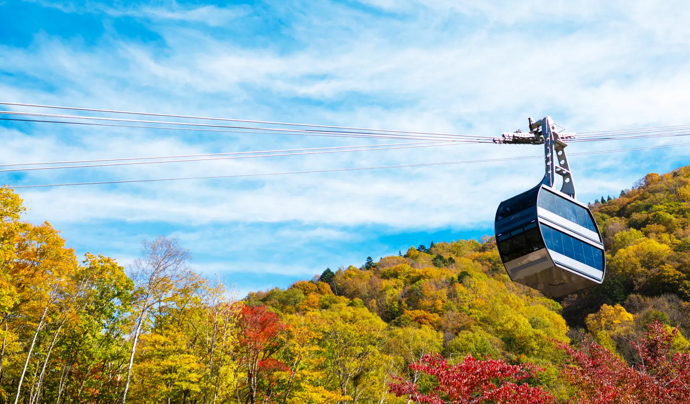
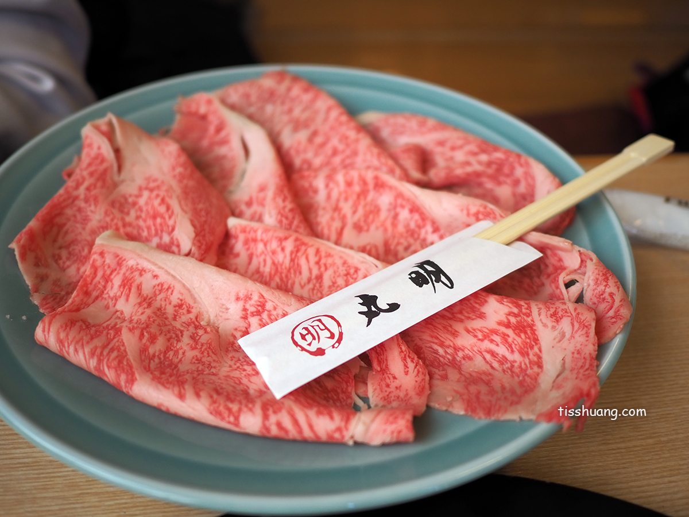
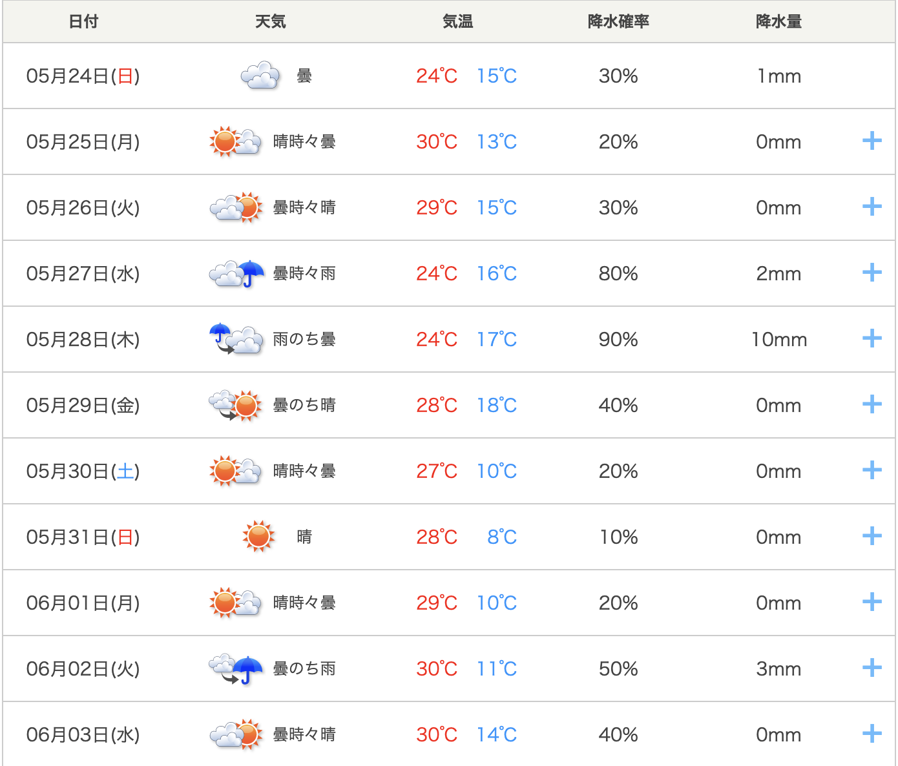
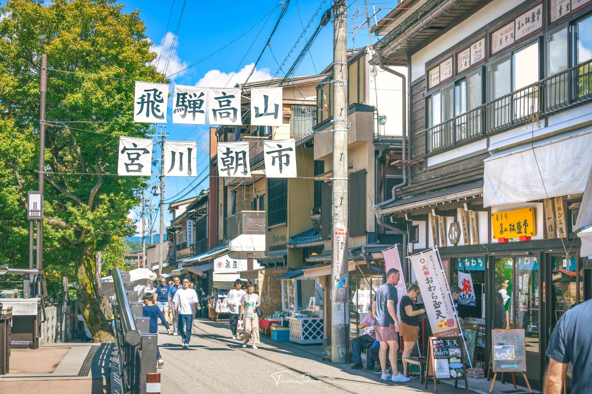
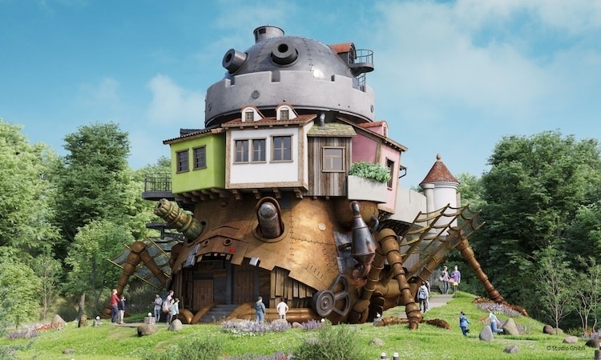
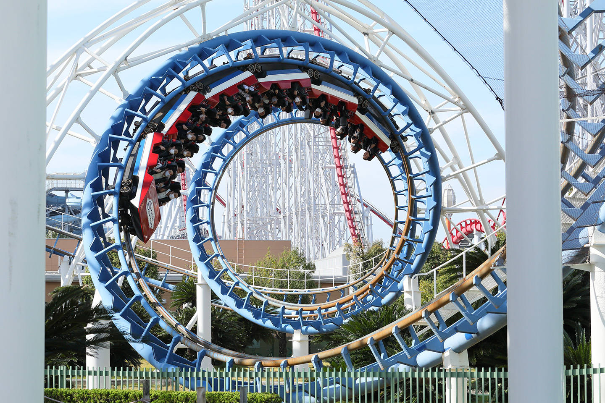
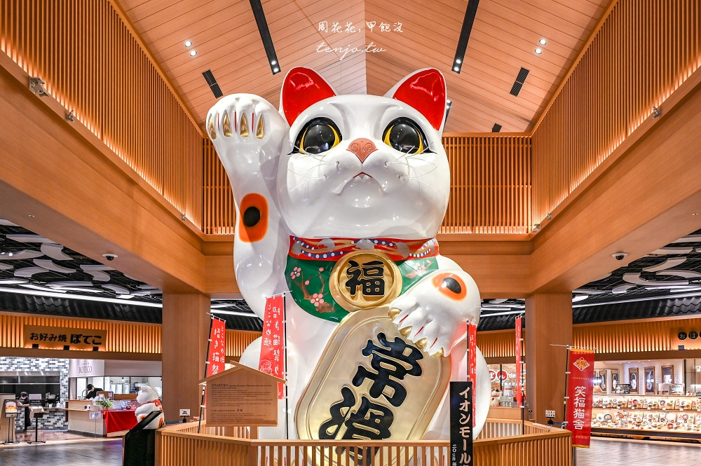

DAY 1：自駕啟程與向高山疾馳
名古屋市一週天氣預報
📍 常滑/名古屋：晴時多雲
🌡️ 氣溫：18°C ~ 26°C

第一站：中部國際空港 ➔ 取車 ➔ 高山 15:30 降落
- 搭乘國泰商務艙尊榮降落，極速出關直奔交通廣場 Toyota 租車。
- 領取 GR Yaris 性能鋼砲，北上飛馳前往高山入住溫泉飯店。


DAY 2：輕裝疾馳新穗高 ✕ 世界遺產合掌村
高山市一週天氣預報
📍 新穗高/合掌村：晴朗無雲
🚘 體感：高空能見度極高
💡 禦寒備戰：新穗高山頂展望台氣溫極低，請務必帶上保暖厚外套。
山道衝刺：新穗高纜車 ➔ 白川鄉合掌村 ➔ 三之町
- 大行李留房內不退房！ 輕裝釋放跑車山道極致操控。
- 搭乘 08:30 首班雙層纜車直攻山頂。午後漫步童話般的白川鄉合掌村聚落。


晚餐饗宴：高山丸明燒肉
- 入座高山燒肉名店「丸明」，大快朵頤油脂細緻的 A5 飛驒牛。

DAY 3：07:00朝市突擊 ➔ 南下名古屋都會採購
飛驒高山天氣預報 (局部小雨)

第一站：宮川朝市體驗 07:00 準時直攻
- 07:00 搶先突擊朝市！ 人潮最少，品嚐在地布丁與鮮牛奶。

第二站：名站 Bic Camera 搬電鍋 ➔ 榮町精品橫掃
- 開車南下直殺 Bic Camera 西店，打包象印頂級電鍋鎖入後車廂。
- 下午進駐榮町橫掃松坂屋與唐吉訶德。車輛停入飯店「封印不移車」。

晚餐盛宴：カツレツ MATUMURA（炸豬排 滿村）
- 搭地鐵前往大名古屋 Building，享用米其林血統低溫慢炸粉紅豬排。

DAY 4：吉卜力奇幻全日沉浸大冒險
全天行程：吉卜力公園 (Ghibli Park) 10:00 - 17:00
- 10:00 開園直衝「魔女之谷」拿霍爾城堡整理券；14:00 進入全室內大倉庫。

晚餐盛宴：あつた蓬萊軒 松坂屋店
- 返回榮町，前往松坂屋排隊享用正宗名古屋鰻魚三吃。

DAY 5：長島溫泉樂園 ✕ 鋼砲還車與飛驒牛
白晝行程：長島溫泉樂園 ➔ 三井 Outlet 10:30 - 18:00
- 上午瘋玩巨大雲霄飛車。下午於 Outlet 買全新大箱現場封箱。
- 18:00 離場回飯店卸貨。20:00 前將跑車開回名站據點完成還車。

自駕圓滿晚餐：飛驒牛一頭家 馬喰一代 名古屋WEST
- 入座奢華包廂品嚐 A5 頂級飛驒牛，慶祝自駕圓滿落幕。

DAY 6：都會慢活 ✕ 紳士換裝高空星光旅拍
午餐名店：コンパル 大須本店 炸蝦三明治
- 慢步大須商店街。午餐朝聖 1947 年老店，享受爆盛香酥的炸蝦三明治。

傍晚：Sky Promenade 旅拍 ➔ L'Auberge de l'Ill 法餐 17:00 - 19:00
- 換上微正式禮服，在 44F 露天迴廊記錄都會夜景（現場禁腳架，純手持）。
- 晚餐登上 42 樓 L'Auberge 法國餐廳，俯瞰璀璨繁星享用星級晚宴。


DAY 7：常滑巨大招財貓 ✕ 滿載幸福商務艙賦歸
最終站：常滑站 ➔ 巨大招財貓 Tokonyan ➔ 機場貴賓室
- 退房帶全行李搭名鐵至常滑站，將大箱與電鍋鎖入置物櫃，極致輕裝漫步陶瓷器小徑。
- 與巨型萌貓頭合影後，搭車 5 分鐘抵達機場辦理優先托運，搭乘 16:40 CX531 航班完美赋歸。
